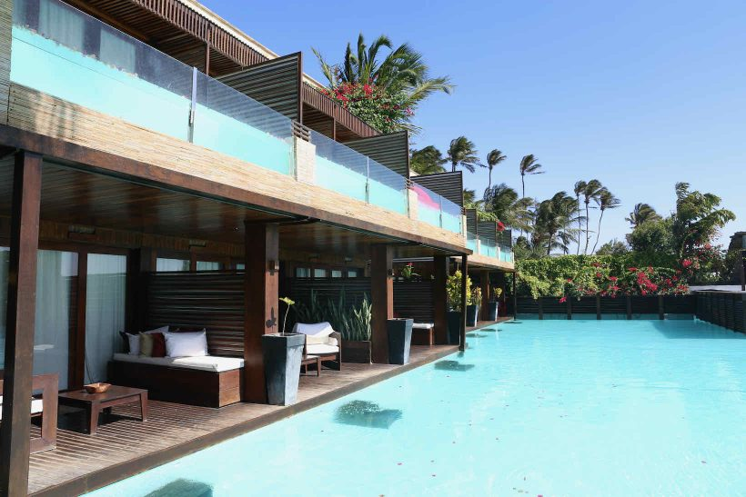

Os mais variados tipos de acomodação estão presentes na vila, desde singelas e pequenas pousadas familiares a luxuosos hotéis. Tudo depende do que você está disposto a pagar e receber. Algumas acomodações estão instaladas na beira da praia, outras ficam em ruas internas - mas no geral tudo é muito perto e acessível com pequenas caminhadas. Segue abaixo algumas das pousadas e hotéis mais bem avaliados pelos turistas:
| Hotel | Nota no Booking.com |
| Pousada O Baobá | 9,9 |
| Pousada Carcará | 9,4 |
| My Blue Hotel | 9,6 |
| Essenza Hotel | 9 |
Uma pousada simpática, pequenina e muito bem localizada é a Baobá, ideal para quem procura algo econômico e central. Se você quiser uma pousada com um pouco mais de estrutura, a mais indicada é a Pousada Carcará, com ótimo atendimento dos funcionários e uma piscina gostosa para curtir o fim de tarde.

Pousada Baobá

Pousada Carcará
Para quem prefere algo mais luxuoso, boas opções são o My Blue Hotel, com uma ótima estrutura na beira da praia, ou o Essenza Hotel, famoso por suas fotos nas redes sociais por sua surpreendente estrutura e maravilhosas piscinas, além de quartos com piscinas privadas.

My Blue Hotel

Essenza Hotel